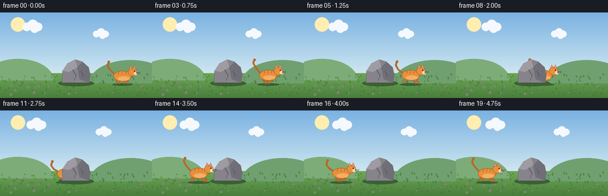
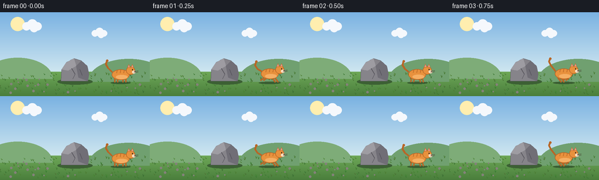

CODING AGENTS AS PIXEL WORLD MODELS
traex/Seed-2.1-Pro-0915 · dynamic_spatial_relationship_0009
点击播放 · 原生 RGB 像素
逐轮保存的候选
回放视频、检查图与代码变化。
每份候选均可单独播放。实际图片检查记录在下方工具轨迹中。
候选 01播放与检查图
点击播放 · 原生 RGB 像素


展开代码变化
--- 上一保存版本
+++ 本次保存版本
@@ -0,0 +1,217 @@
+"""Procedural text-to-video: a cat runs from the right of a rock to its left.
+
+Renders 20 RGB frames (256x144 @ 4fps) with PIL/numpy only. The scene is drawn
+at 2x supersampling and downsampled for smoother edges.
+"""
+import math
+
+import numpy as np
+from PIL import Image, ImageDraw
+
+import artifact_io
+
+W, H, N, FPS = 256, 144, 20, 4.0
+S = 2 # supersampling factor
+
+
+def sc(v):
+ return int(round(v * S))
+
+
+# ---------- background ------------------------------------------------------
+
+def make_background():
+ """Static background: sky gradient, sun, hills, ground, grass tufts."""
+ rng = np.random.default_rng(7)
+ img = Image.new("RGB", (W * S, H * S))
+ px = img.load()
+
+ top = np.array([122, 178, 226])
+ bottom = np.array([206, 230, 240])
+ horizon = sc(102)
+ for y in range(horizon):
+ t = y / max(horizon - 1, 1)
+ c = tuple((top * (1 - t) + bottom * t).astype(int))
+ for x in range(W * S):
+ px[x, y] = c
+
+ # ground gradient
+ g_top = np.array([110, 168, 88])
+ g_bot = np.array([74, 126, 60])
+ for y in range(horizon, H * S):
+ t = (y - horizon) / max((H * S - horizon - 1), 1)
+ c = tuple((g_top * (1 - t) + g_bot * t).astype(int))
+ for x in range(W * S):
+ px[x, y] = c
+
+ draw = ImageDraw.Draw(img)
+
+ # sun
+ draw.ellipse([sc(30) - sc(12), sc(20) - sc(12),
+ sc(30) + sc(12), sc(20) + sc(12)], fill=(255, 238, 175))
+
+ # distant hills
+ draw.pieslice([sc(-30), sc(78), sc(90), sc(150)], 180, 360, fill=(126, 172, 120))
+ draw.pieslice([sc(150), sc(80), sc(290), sc(158)], 180, 360, fill=(112, 160, 112))
+
+ # grass tufts and pebbles
+ for _ in range(130):
+ x = rng.integers(0, W)
+ y = rng.integers(106, H - 2)
+ h = rng.integers(2, 5)
+ col = (60 + int(rng.integers(0, 20)), 110 + int(rng.integers(0, 25)), 52)
+ draw.line([sc(x), sc(y), sc(x) - sc(1), sc(y - h)], fill=col, width=S)
+ draw.line([sc(x), sc(y), sc(x) + sc(1), sc(y - h + 1)], fill=col, width=S)
+ for _ in range(22):
+ x = rng.integers(4, W - 4)
+ y = rng.integers(112, H - 4)
+ r = rng.integers(1, 3)
+ draw.ellipse([sc(x - r), sc(y - r), sc(x + r), sc(y + r)],
+ fill=(132, 130, 122))
+
+ return img
+
+
+def draw_cloud(draw, cx, cy, scale):
+ col = (245, 248, 252)
+ for dx, dy, r in [(-10, 0, 7), (0, -3, 9), (9, 0, 7), (3, 3, 7)]:
+ draw.ellipse([sc(cx + (dx - r) * scale), sc(cy + (dy - r) * scale),
+ sc(cx + (dx + r) * scale), sc(cy + (dy + r) * scale)], fill=col)
+
+
+# ---------- rock ------------------------------------------------------------
+
+ROCK_POLY = [(104, 118), (105, 98), (113, 86), (126, 79), (139, 83),
+ (149, 92), (152, 106), (150, 118)]
+ROCK_X_MIN, ROCK_X_MAX = 104, 152
+
+
+def draw_rock(draw):
+ pts = [(sc(x), sc(y)) for x, y in ROCK_POLY]
+ # contact shadow
+ draw.ellipse([sc(98), sc(114), sc(158), sc(124)], fill=(60, 96, 52))
+ draw.polygon(pts, fill=(134, 132, 138), outline=(88, 86, 94))
+ # lit upper-left facet
+ draw.polygon([(sc(105), sc(98)), (sc(113), sc(86)), (sc(126), sc(79)),
+ (sc(130), sc(92)), (sc(116), sc(100))], fill=(158, 156, 162))
+ # shaded lower-right facet
+ draw.polygon([(sc(130), sc(92)), (sc(139), sc(83)), (sc(149), sc(92)),
+ (sc(152), sc(106)), (sc(150), sc(118)), (sc(134), sc(112))],
+ fill=(112, 110, 118))
+ # cracks
+ draw.line([sc(122), sc(96), sc(128), sc(106), sc(124), sc(114)],
+ fill=(84, 82, 90), width=S)
+ draw.line([sc(136), sc(98), sc(140), sc(108)], fill=(84, 82, 90), width=S)
+
+
+# ---------- cat -------------------------------------------------------------
+
+ORANGE = (232, 145, 61)
+ORANGE_D = (184, 102, 38)
+ORANGE_L = (245, 175, 100)
+CREAM = (246, 222, 192)
+DARK = (60, 42, 32)
+PINK = (228, 150, 150)
+
+
+def draw_cat(base, cx, feet_y, phase, facing=-1):
+ """Draw a side-view running cat. facing = -1 looks/runs left."""
+ draw = ImageDraw.Draw(base)
+ bob = -abs(math.sin(phase)) * 1.6
+ cy = feet_y - 13 + bob
+
+ def p(lx, ly):
+ return (sc(cx + facing * lx), sc(cy + ly))
+
+ def ell(lx, ly, rx, ry, fill, outline=None, width=1):
+ box = [sc(cx + facing * lx - rx), sc(cy + ly - ry),
+ sc(cx + facing * lx + rx), sc(cy + ly + ry)]
+ draw.ellipse(box, fill=fill, outline=outline, width=max(S, width * S))
+
+ # ground shadow (fades a touch while bounding)
+ shade_w = 17 + abs(math.sin(phase)) * 2
+ draw.ellipse([sc(cx - shade_w), sc(feet_y - 1),
+ sc(cx + shade_w), sc(feet_y + 3)], fill=(58, 94, 50))
+
+ # tail (rear is +x), with sway and dark tip
+ sway = math.sin(phase * 0.9) * 3
+ tail_pts = [p(14, -4), p(21, -11 + sway), p(25, -18 + sway * 1.4),
+ p(23, -24 + sway)]
+ draw.line(tail_pts, fill=ORANGE_D, width=sc(3), joint="curve")
+ draw.ellipse([tail_pts[-1][0] - sc(2), tail_pts[-1][1] - sc(2),
+ tail_pts[-1][0] + sc(2), tail_pts[-1][1] + sc(2)], fill=ORANGE_D)
+
+ # legs: hips at body underside; feet swing with the gait
+ hips = [(-9, phase + math.pi), (-4, phase + math.pi), (5, phase), (10, phase)]
+ for hx, ph in hips:
+ swing = math.sin(ph) * 6
+ lift = max(0.0, math.sin(ph)) * 3
+ draw.line([p(hx, 7),
+ (sc(cx + facing * (hx + swing)), sc(feet_y - lift))],
+ fill=ORANGE_D, width=sc(2.4))
+
+ # body
+ ell(0, 0, 15, 9, ORANGE, outline=ORANGE_D)
+ # belly highlight
+ ell(-2, 4, 10, 3.5, ORANGE_L)
+ # tabby stripes
+ for sx in (-6, 0, 6):
+ draw.line([p(sx, -8), p(sx + 1, -3)], fill=ORANGE_D, width=S)
+
+ # head
+ ell(-17, -7, 7.5, 7, ORANGE, outline=ORANGE_D)
+ # ears
+ for ex in (-20, -14):
+ ear = [p(ex - 2.5, -12), p(ex + 2.5, -12), p(ex, -18)]
+ draw.polygon(ear, fill=ORANGE, outline=ORANGE_D)
+ inner = [p(ex - 1.2, -13), p(ex + 1.2, -13), p(ex, -16.5)]
+ draw.polygon(inner, fill=PINK)
+ # muzzle, nose, eye
+ ell(-22.5, -4.5, 3.2, 2.6, CREAM)
+ draw.polygon([p(-25.5, -6), p(-23.5, -6), p(-24.8, -4.4)], fill=DARK)
+ eye_x, eye_y = p(-19.5, -9.5)
+ draw.ellipse([eye_x, eye_y, eye_x + sc(1.6), eye_y + sc(1.8)], fill=DARK)
+ # whiskers
+ for wy in (-5.5, -3.5):
+ draw.line([p(-23, wy), p(-30, wy - 1)], fill=DARK, width=max(1, S // 2))
+
+
+# ---------- scene assembly --------------------------------------------------
+
+def render_frame(frame_idx, background):
+ img = background.copy()
+ draw = ImageDraw.Draw(img)
+
+ # drifting clouds
+ drift = frame_idx * 0.6
+ draw_cloud(draw, 55 + drift, 24, 1.0)
+ draw_cloud(draw, 170 + drift * 0.7, 36, 0.8)
+
+ t = frame_idx / (N - 1)
+ # smoothstep ease in/out: stand briefly, run, settle
+ s = t * t * (3 - 2 * t)
+ x_start, x_end = 206, 52
+ cx = x_start + (x_end - x_start) * s
+ phase = frame_idx * 1.45
+ feet_y = 120
+
+ # Cat passes behind the rock while overlapping its footprint.
+ behind = ROCK_X_MIN - 16 <= cx <= ROCK_X_MAX + 16
+ if not behind:
+ draw_rock(draw)
+ draw_cat(img, cx, feet_y, phase, facing=-1)
+ if behind:
+ draw_rock(draw)
+
+ return np.asarray(img.resize((W, H), Image.Resampling.LANCZOS), dtype=np.uint8)
+
+
+def main():
+ background = make_background()
+ frames = np.stack([render_frame(i, background) for i in range(N)], axis=0)
+ artifact_io.save(frames, ".")
+ print(f"saved {frames.shape} video; cat x: {206} -> 52 across {N} frames")
+
+
+if __name__ == "__main__":
+ main()
可观测工具轨迹
实际执行的命令与返回图片。
命令 1exit 0
/bin/bash -lc 'cat prompt.txt GENERATION_RULES.json task_spec.json 2>/dev/null || ls -la'
命令 2exit 0
/bin/bash -lc 'cat GENERATION_RULES.md'
命令 3exit 0
/bin/bash -lc 'cat artifact_io.py'
命令 4exit 0
/bin/bash -lc 'cd . && python generate.py && ls -la'
命令 5exit 0
/bin/bash -lc "cd . && python - <<'EOF'
import numpy as np
from PIL import Image
# rock color ~ (134,132,138); cat orange ~ (232,145,61)
for i in range(20):
a = np.asarray(Image.open(f\"frames/{i:02d}.png\")).astype(int)
r, g, b = a[..., 0], a[..., 1], a[..., 2]
orange = (r > 190) & (g > 90) & (g < 190) & (b < 110)
gray = (abs(r - g) < 14) & (abs(g - b) < 14) & (r > 95) & (r < 175)
ys, xs = np.nonzero(orange)
gys, gxs = np.nonzero(gray)
cx = xs.mean() if len(xs) else float('nan')
rock_cx = gxs.mean() if len(gxs) else float('nan')
print(f\"f{i:02d}: orange_px={orange.sum():4d} cat_x={cx:6.1f} rock_px={gray.sum():4d} rock_x={rock_cx:6.1f} right={cx>rock_cx if not np.isnan(cx) else '-'}\")
EOF"命令 6exit 0
/bin/bash -lc "cd . && python - <<'EOF'
import numpy as np
d = np.load(\"pixels.npz\")
t = d[\"pixels\"]
print(\"tensor:\", t.shape, t.dtype)
# reconstruct frame 0 RGB and compare with PNG
from PIL import Image
png = np.asarray(Image.open(\"frames/00.png\")).astype(np.uint32)
packed = (png[...,0]<<16)|(png[...,1]<<8)|png[...,2]
print(\"frame0 matches npz:\", np.array_equal(packed, t[...,0]))
print(\"all frames distinct:\", len({t[...,i].tobytes() for i in range(t.shape[-1])}) == 20)
EOF
ls frames | head -25"保存候选 1 份；完成命令 6 次；可验证图片返回 0 张。原始 API 响应与完整日志保留在本地。